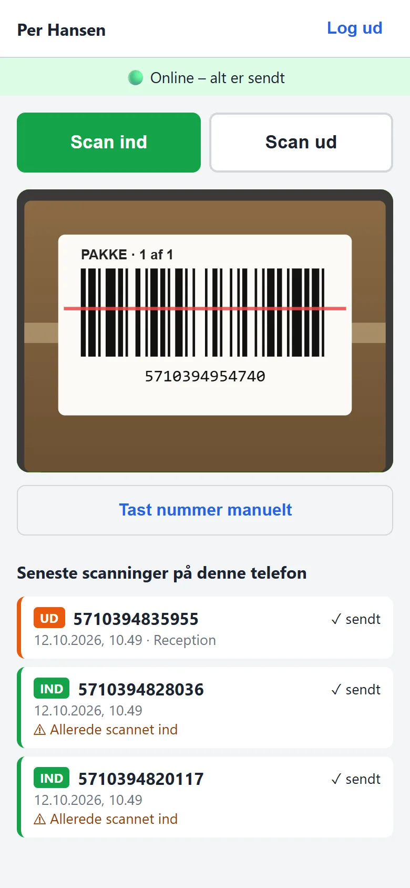
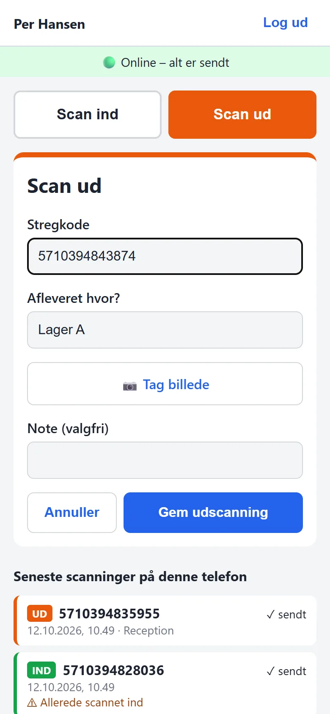
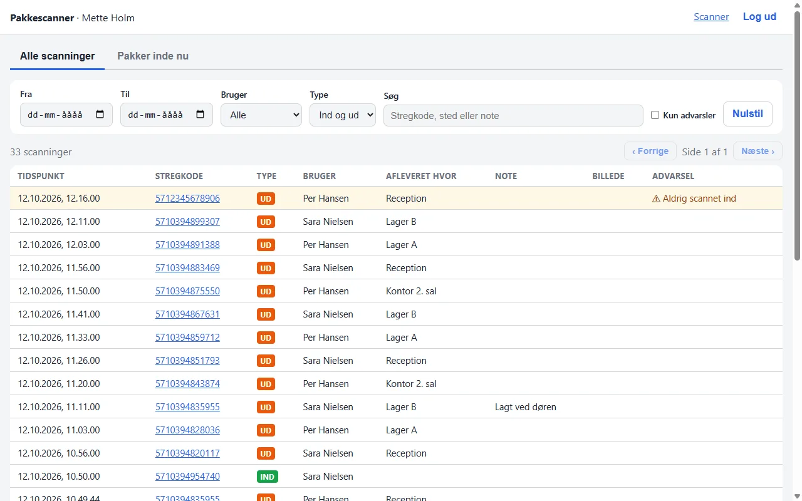
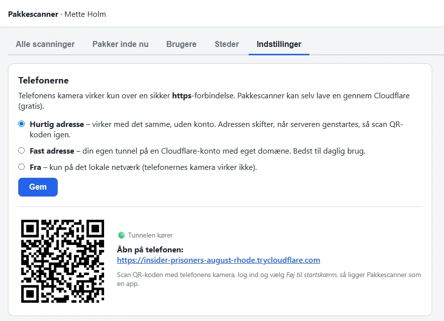
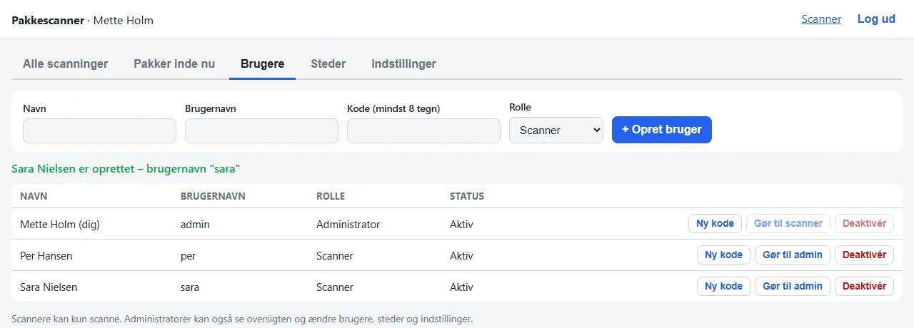

Medarbejderne scanner pakkens stregkode med telefonens kamera. Der gemmes hvem, hvornår og hvor den blev afleveret – også selvom nettet er væk. På computeren kan man se det hele.


Tryk "Scan ind" og hold kameraet mod stregkoden. Den læses automatisk med et bip, og så er man klar til den næste.
Tryk "Scan ud", scan koden og vælg hvor den blev afleveret. Tag evt. et billede som bevis og skriv en note.
Se alle scanninger, søg på en stregkode, se en pakkes historik og hvilke pakker der er inde lige nu.
Det er en webside, som kan gemmes på hjemmeskærmen. Folk åbner bare et link og logger ind.

Kun administratorer kan se oversigten.
Kameraet kræver en sikker https-forbindelse. Pakkescanner laver den selv gennem Cloudflare – gratis og uden at røre routeren.


På lageret, i kælderen eller ude på ruten – man kan bare blive ved med at scanne.
Hver scanning (også billedet) lægges i telefonens kø, før den sendes.
Så snart der er net igen, sendes køen. Man skal ikke gøre noget.
Hver scanning har sit eget id, så serveren gemmer den kun én gang.
Tiden er den, hvor der blev scannet – ikke hvornår den nåede frem.
Brugere med kode, administratorer og almindelige scannere.
Kamera, ind/ud, billede, manuel indtastning og offline-kø.
Tabel, filtre, pakkehistorik og pakker inde nu.
Download det, der er filtreret frem, som et regneark.
Opret brugere og afleveringssteder direkte i oversigten.
Opsætningsprogram til Windows, HTTPS og daglig backup.
Pakkescanner installeres på en Windows-pc eller -server i firmaet. Den kører i baggrunden og starter selv, når computeren tænder. Alle data bliver hos dig.